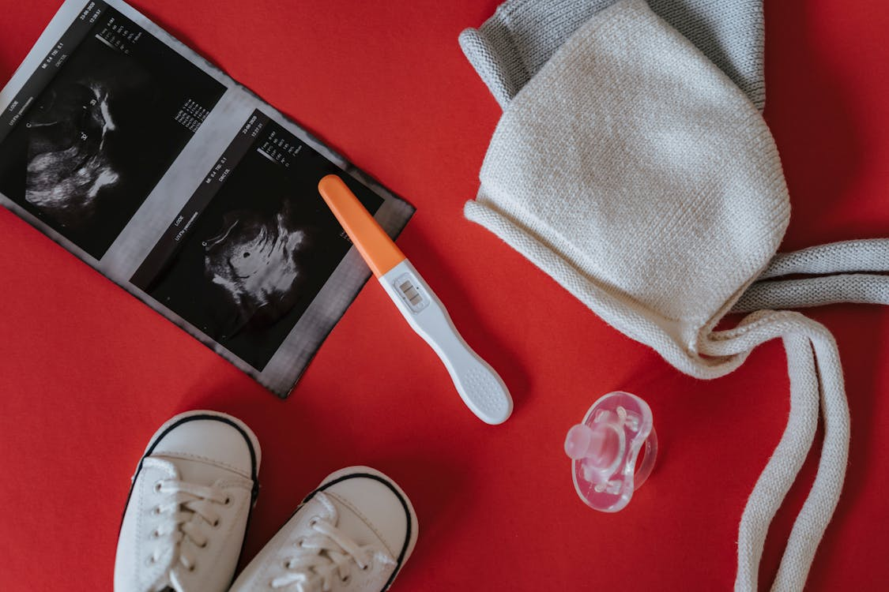

Early Pregnancy
Early pregnancy occurs when a young person becomes pregnant during their teenage years, typically between the ages of 13 and 19. This can have significant physical, emotional, and social implications.
What Causes Eearly Prenancy?
- Lack of information about sexual and reproductive health and rights
- Inadequate access to services tailored to young people
- Family, community and social pressure to marry
- Sexual violence
- Child, early and forced marriage, which can be both a cause and a consequence
- Lack of education or school drop-out
How to Prevent Getting Pregnant:
- The most effective way to prevent pregnancy is to refrain from sexual activity.
- Birth Control Methods: Use condoms, birth control pills, patches, or other methods to reduce the risk of pregnancy
Different Ways to Use Birth Control:
- Condoms: Protect against both pregnancy and sexually transmitted infections (STIs).
- Hormonal Methods: Pills, patches, and injections regulate hormones to prevent ovulation
- IUDs: Small devices placed in the uterus to prevent fertilization.
Why It’s Better Not to Have Sex at a Young Age:
- Emotional Readiness: Many teens may not be emotionally prepared for the responsibilities that come with sexual activity.
- Risk of Pregnancy: Engaging in sexual activity increases the risk of unplanned pregnancies.
- Focus on Education: Being sexually active can distract from educational and personal goals.
Talking About Relationships:
- Comfort with Saying No: It’s essential to feel empowered to decline sexual activity and communicate personal boundaries.
- Healthy Relationships: Focus on mutual respect, trust, and understanding.

Where to Find Information About Preventing Pregnancy:
- Health Clinics: Local clinics often provide educational resources and counseling.
- Online Resources: Websites like Planned Parenthood, LoveYourself, and other local health organizations offer reliable information.
- Books and Brochures: Schools and libraries often have educational materials available
Understanding the Risks of Having Sex at a Young Age:
- Physical Health Risks: STIs and unintended pregnancies can occur.
- Online Resources: Websites like Planned Parenthood, LoveYourself, and other local health organizations offer reliable information.
- Emotional Consequences: Young people may experience stress, anxiety, or regret related to early sexual activity.
- Impact on Future Goals: Early pregnancy can disrupt education and career plans.
How to Plan for Safe and Healthy Relationships:
- Set Boundaries: Know what you are comfortable with and communicate that to your partner.
- Educate Yourself: Understand what constitutes a healthy relationship and recognize red flags.
Why Education About Pregnancy is Important for Young People:
- Empowerment: Knowledge empowers young people to make informed decisions about their bodies and relationships
- Reduction in Early Pregnancies: Comprehensive education can lead to lower rates of early pregnancy and STIs.
Local Programs That Help Prevent Early Pregnancy:
- Community Health Programs: Many local health departments offer workshops and seminars on reproductive health.
- School Programs: Some schools provide sexual education courses that cover pregnancy prevention.
- Youth Organizations: Organizations like LoveYourself, Women’s Crisis Center, and others often run educational initiatives.